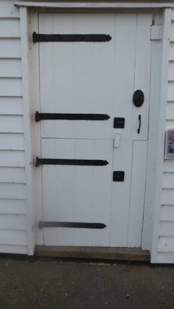

Instructions
Normal pub quiz rules apply, so you are on your honour not to search the internet for the answers.
Find where photos shown on the photos page were taken.
Take your own photo of the same thing including a member of your own team in the shot. For example, you might recognize this photo as the door of the Tide Mill.
So take a photo like this one to prove you have been there
You can bring your photos back to us or email them with your team number to paulthepod@gmail.com.
The first team back to Pauline and I with all the photos is the winner. If no team gets all the photos within the time allowed then the team with the most correct answers wins.
Results
I will try to maintain a score board
Answers
After the event I will post a link here to a Google photo album. From there you can click on the info button to see a map of where it was taken.